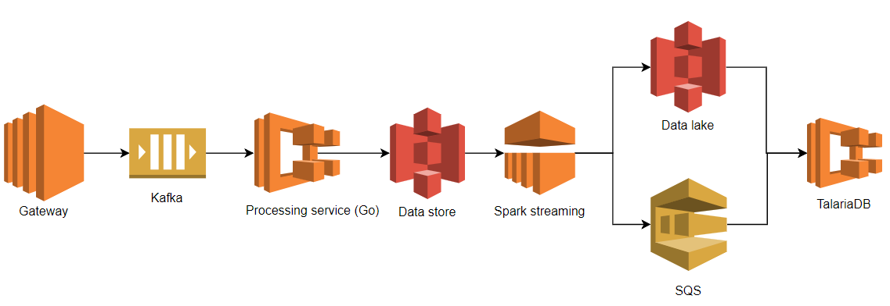
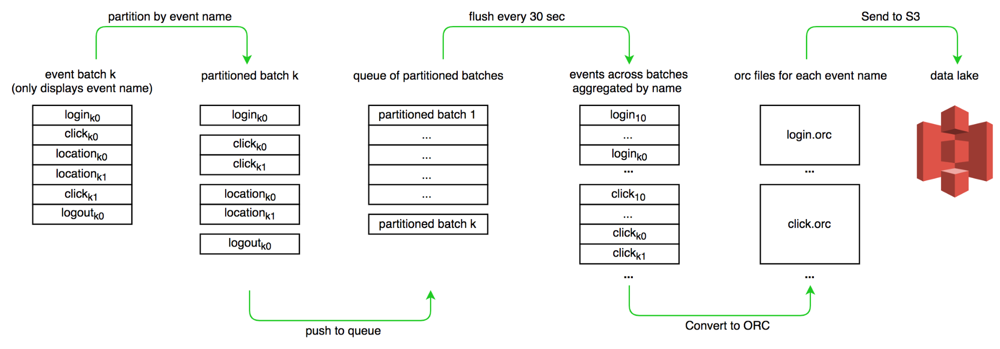
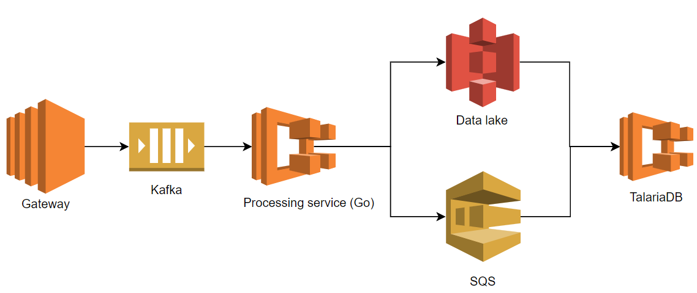

How We Simplified Our Data Ingestion & Transformation Process
Introduction
As Grab grew from a small startup to an organisation serving millions of customers and driver partners, making day-to-day data-driven decisions became paramount. We needed a system to efficiently ingest data from mobile apps and backend systems and then make it available for analytics and engineering teams.
Thanks to modern data processing frameworks, ingesting data isn’t a big issue. However, at Grab scale it is a non-trivial task. We had to prepare for two key scenarios:
- Business growth, including organic growth over time and expected seasonality effects.
- Any unexpected peaks due to unforeseen circumstances. Our systems have to be horizontally scalable.
We could ingest data in batches, in real time, or a combination of the two. When you ingest data in batches, you can import it at regularly scheduled intervals or when it reaches a certain size. This is very useful when processes run on a schedule, such as reports that run daily at a specific time. Typically, batched data is useful for offline analytics and data science.
On the other hand, real-time ingestion has significant business value, such as with reactive systems. For example, when a customer provides feedback for a Grab superapp widget, we re-rank widgets based on that customer’s likes or dislikes. Note when information is very time-sensitive, you must continuously monitor its data.
This blog post describes how Grab built a scalable data ingestion system and how we went from prototyping with Spark Streaming to running a production-grade data processing cluster written in Golang.
Building the system without reinventing the wheel
The data ingestion system:
- Collects raw data as app events.
- Transforms the data into a structured format.
- Stores the data for analysis and monitoring.
In a previous blog post, we discussed dealing with batched data ETL with Spark. This post focuses on real-time ingestion.
We separated the data ingestion system into 3 layers: collection, transformation, and storage. This table and diagram highlights the tools used in each layer in our system’s first design.
| Layer | Tools |
|---|---|
| Collection | Gateway, Kafka |
| Transformation | Go processing service, Spark Streaming |
| Storage | TalariaDB |

Our first design might seem complex, but we used battle-tested and common tools such as Apache Kafka and Spark Streaming. This let us get an end-to-end solution up and running quickly.
Collection layer
Our collection layer had two sub-layers:
- Our custom built API Gateway received HTTP requests from the mobile app. It simply decoded and authenticated HTTP requests, streaming the data to the Kafka queue.
- The Kafka queue decoupled the transformation layer (shown in the above figure as the processing service and Spark streaming) from the collection layer (shown above as the Gateway service). We needed to retain raw data in the Kafka queue for fault tolerance of the entire system. Imagine an error where a data pipeline pollutes the data with flawed transformation code or just simply crashes. The Kafka queue saves us from data loss by data backfilling.
Since it’s robust and battle-tested, we chose Kafka as our queueing solution. It perfectly met our requirements, such as high throughput and low latency. Although Kafka takes some operational effort such as self-hosting and monitoring, Grab has a proficient and dedicated team managing our Kafka cluster.
Transformation layer
There are many options for real-time data processing, including Spark Streaming, Flink, and Storm. Since we use Spark for all our batch processing, we decided to use Spark Streaming.
We deployed a Golang processing service between Kafka and Spark Streaming. This service converts the data from Protobuf to Avro. Instead of pointing Spark Streaming directly to Kafka, we used this processing service as an intermediary. This was because our Spark Streaming job was written in Python and Spark doesn’t natively support protobuf decoding. We used Avro format, since Grab historically used it for archiving streaming data. Each raw event was enriched and batched together with other events. Batches were then uploaded to S3.
Storage layer
TalariaDB is a Grab-built time-series database. It ingests events as columnar ORC files, indexing them by event name and time. We use the same ORC format files for batch processing. TalariaDB also implements the Presto Thrift connector interface, so our users could query certain event types by time range. They did this by connecting a Presto to a TalariaDB hosting distributed cluster.
Problems
Building and deploying our data pipeline’s MVP provided great value to our data analysts, engineers, and QA team. For example, our mobile app team could monitor any abnormal change in the real-time metrics, such as the screen load time for the latest released app version. The QA team could perform app side actions (book a ride, make payment, etc.) and check which events were triggered and received by the backend. The latency between the ingestion and the serving layer was only 4 minutes instead of the batch processing system’s 60 minutes. The streaming processing’s data showed good business value.
This prompted us to develop more features on top of our platform-collected real-time data. Very soon our QA engineers and the product analytics team used more and more of the real-time data processing system. They started instrumenting various mobile applications so more data started flowing in. However, as our ingested data increased, so did our problems. These were mostly related to operational complexity and the increased latency.
Operational complexity
Only a few team members could operate Spark Streaming and EMR. With more data and variable rates, our streaming jobs had scaling issues and failed occasionally. This was due to checkpoint issues when the cluster was under heavy load. Increasing the cluster size helped, but adding more nodes also increased the likelihood of losing more cluster nodes. When we lost nodes,our latency went up and added more work for our already busy on-call engineers.
Supporting native Protobuf
To simplify the architecture, we initially planned to bypass our Golang-written processing service for the real-time data pipeline. Our plan was to let Spark directly talk to the Kafka queue and send the output to S3. This required packaging the decoders for our protobuf messages for Python Spark jobs, which was cumbersome. We thought about rewriting our job in Scala, but we didn’t have enough experience with it.
Also, we’d soon hit some streaming limits from S3. Our Spark streaming job was consuming objects from S3, but the process was not continuous due to S3’s eventual consistency. To avoid long pagination queries in the S3 API, we had to prefix the data with the hour in which it was ingested. This resulted in some data loss after processing by the Spark streaming. The loss happened because the new data would appear in S3 while Spark Streaming had already moved on to the next hour. We tried various tweaks, but it was just a bad design. As our data grew to over one terabyte per hour, our data loss grew with it.

Processing lag
On average, the time from our system ingesting an event to when it was available on the Presto was 4 to 6 minutes. We call that processing lag, as it happened due to our data processing. It was substantially worse under heavy loads, increasing to 8 to 13 minutes. While that wasn’t bad at this scale (a few TBs of data), it made some use cases impossible, such as monitoring. We needed to do better.
Simplifying the architecture and rewriting in Golang
After completing the MVP phase development, we noticed the Spark Streaming functionality we actually used was relatively trivial. In the Spark Streaming job, we only:
- Partitioned the batch of events by event name.
- Encoded the data in ORC format.
- And uploaded to an S3 bucket.
To mitigate the problems mentioned above, we tried re-implementing the features in our existing Golang processing service. Besides consuming the data and publishing to an S3 bucket, the transformation service also needed to deal with event partitioning and ORC encoding.

One key problem we addressed was implementing a robust event partitioner with a large write throughput and low read latency. Fortunately, Golang has a nice concurrent map package. To further reduce the lock contention, we added sharding.
We made the changes, deployed the service to production,and discovered our service was now memory-bound as we buffered data for 1 minute. We did thorough benchmarking and profiling on heap allocation to improve memory utilization. By iteratively reducing inefficiencies and contributing to a lower CPU consumption, we made our data transformation more efficient.

Performance
After revamping the system, the elapsed time for a single event to travel from the gateway to our dashboard is about 1 minute. We also fixed the data loss issue. Finally, we significantly reduced our on-call workload by removing Spark Streaming.
Validation
At this point, we had both our old and new pipelines running in parallel. After drastically improving our performance, we needed to confirm we still got the same end results. This was done by running a query against each of the pipelines and comparing the results. Both systems were registered to the same Presto cluster.
We ran two SQL “excerpts” between the two pipelines in different order. Both queries returned the same events, validating our new pipeline’s correctness.
select count(1) from ((
select uuid, time from grab_x.realtime_new
where event = 'app.metric1' and time between 1541734140 and 1541734200
) except (
select uuid, time from grab_x.realtime_old
where event = 'app.metric1' and time between 1541734140 and 1541734200
))
/* output: 0 */
Conclusions
Scaling a data ingestion system to handle hundreds of thousands of events per second was a non-trivial task. However, by iterating and constantly simplifying our overall architecture, we were able to efficiently ingest the data and drive down its lag to around one minute.
Spark Streaming was a great tool and gave us time to understand the problem. But, understanding what we actually needed to build and iteratively optimise the entire data pipeline led us to:
- Replacing Spark Streaming with our new Golang-implemented pipeline.
- Removing Avro encoding.
- Removing an intermediary S3 step.
Differences between the old and new pipelines are:
| Old Pipeline | New Pipeline | |
|---|---|---|
| Languages | Python, Go | Go |
| Stages | 4 services | 3 services |
| Conversions | Protobuf → Avro → ORC | Protobuf → ORC |
| Lag | 4-13 min | 1 min |
Systems usually become more and more complex over time, leading to tech debt and decreased performance. In our case, starting with more steps in the data pipeline was actually the simple solution, since we could re-use existing tools. But as we reduced processing stages, we’ve also seen fewer failures. By simplifying the problem, we improved performance and decreased operational complexity. At the end of the day, our data pipeline solves exactly our problem and does nothing else, keeping things fast.